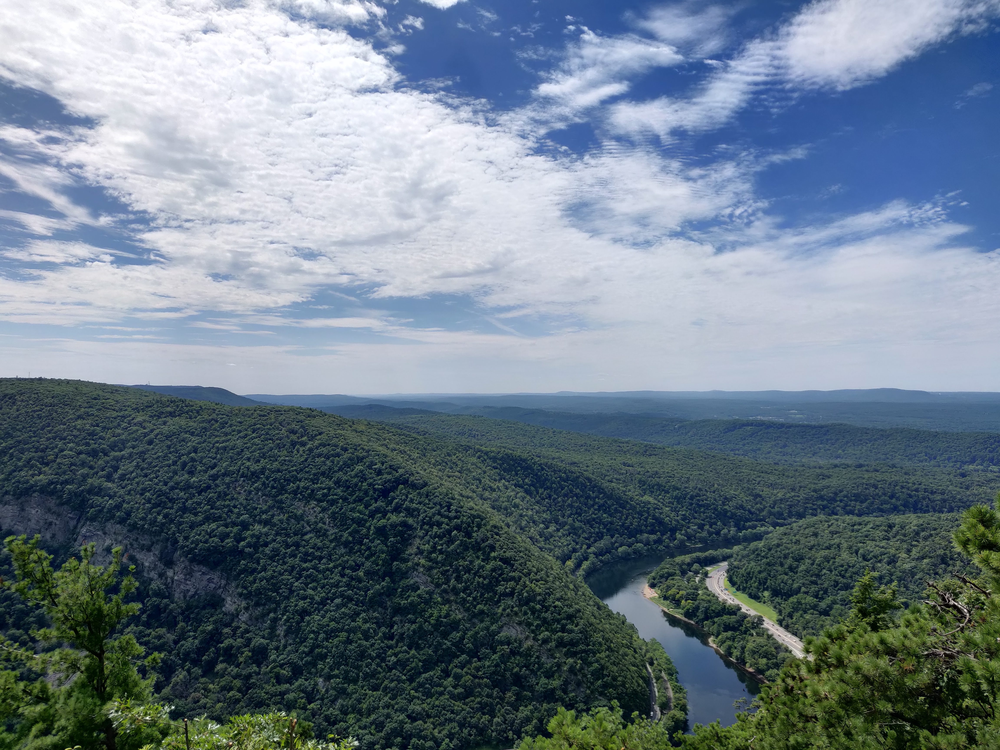
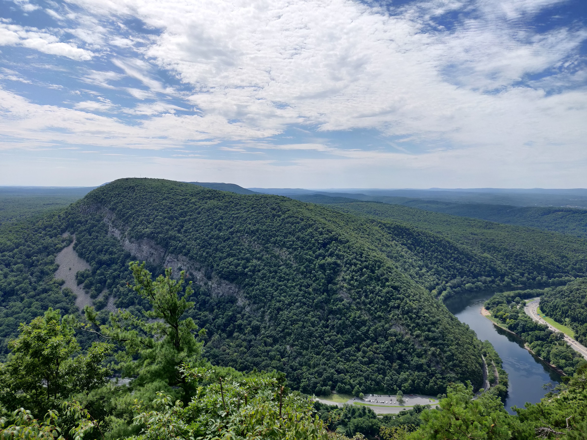
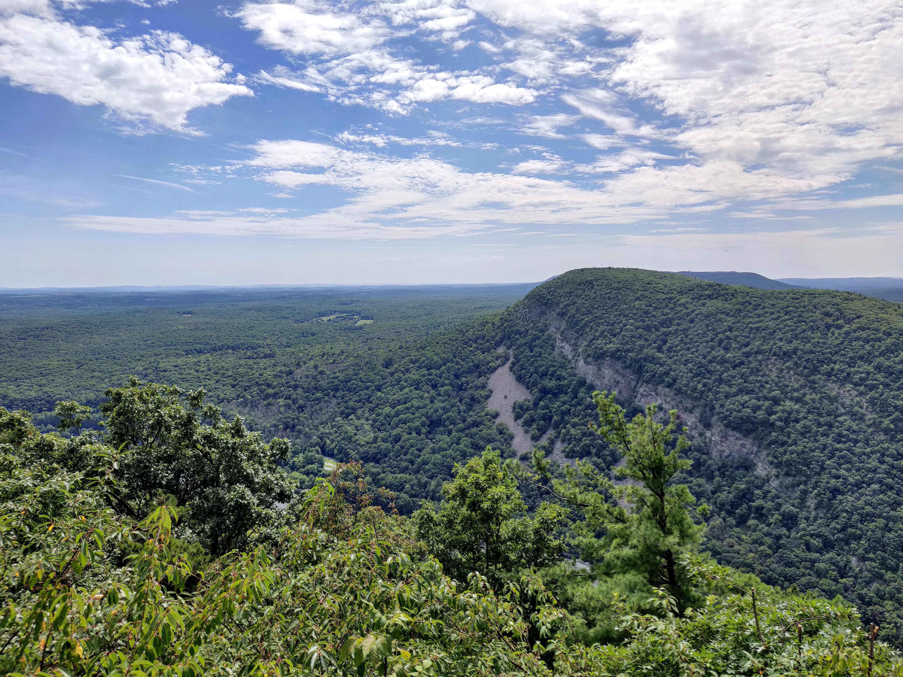
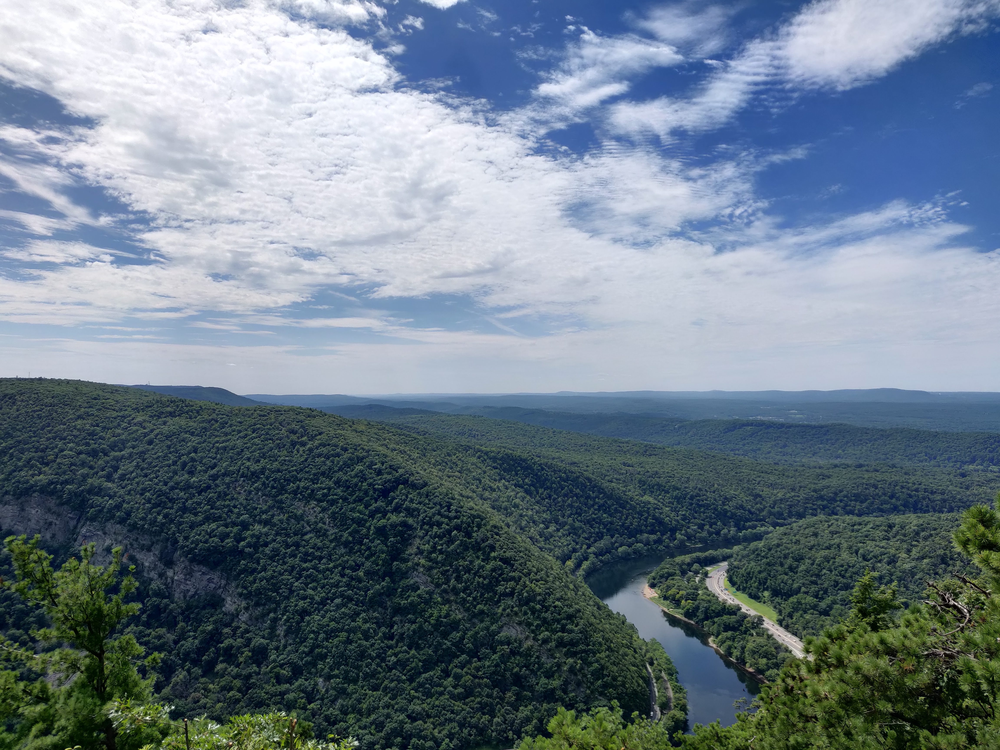
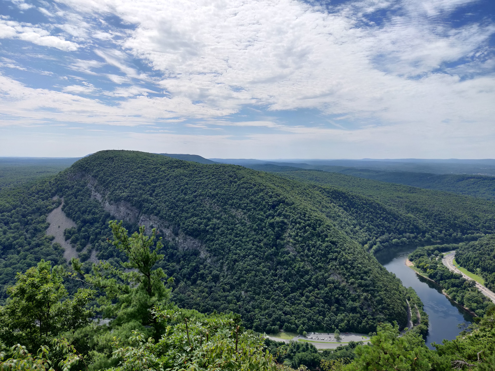
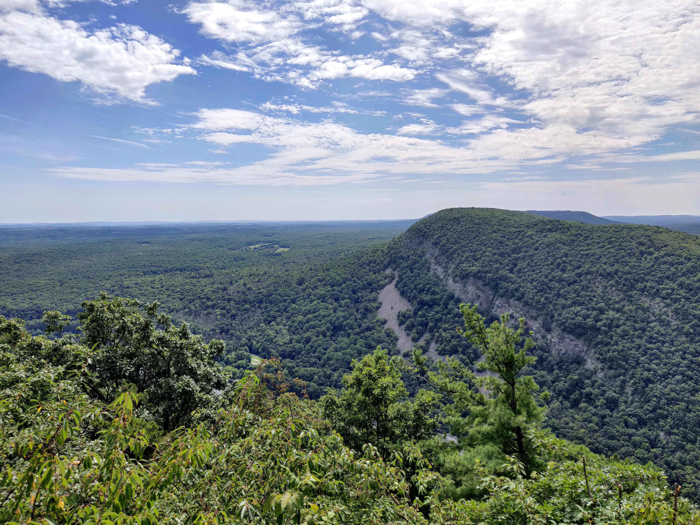
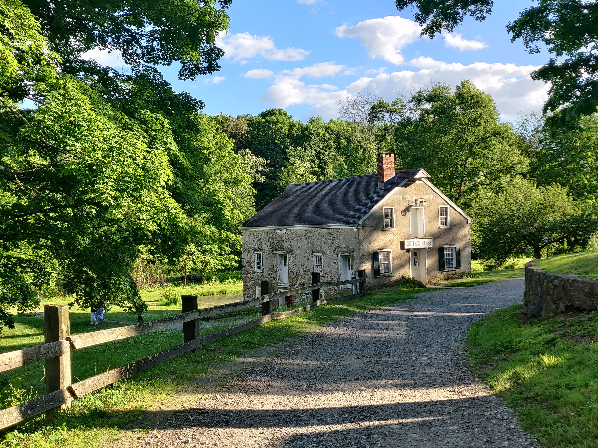
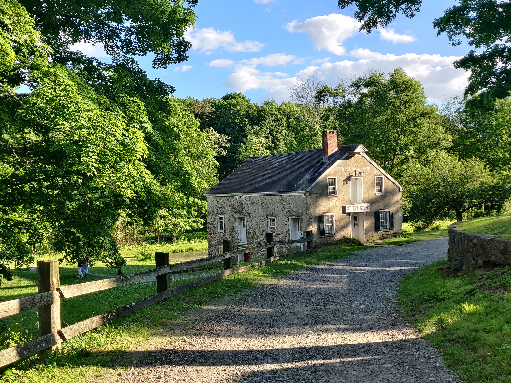

New Jersey - The Garden State Pt. 1: NJ Skylands
Motivation
The Skylands is a region New Jersey, in the northwest, comprising Sussex, Morris, Warren, Hunterdon, and Somerset Counties. Although New Jersey is a densly populated state, this region of the state is rather rugged. There are many glacial lakes and reservoirs where watersports are common. The Appalachian Mountains also run through this part of the state, giving us many opportunities to hike and go to scenic overlooks. In addition to natural beauty, New Jersey is the third state in the Union, so it is of historical significance to our nation. As such, there are many historic Buildings constructed during the Colonial or Revolutionary periods.
The Delaware Water Gap - Warren County:
 





Wawayanda State - Sussex County:
Sunsets on Greenpond Lake - Morris County
Historical Sites in Allamuchy Mountain State Park - Sussex County:

 

View from High Point State Park - Sussex County:
Washington Rock State Park - Somerset County:
Historic Buildings in Madison - Morris County: